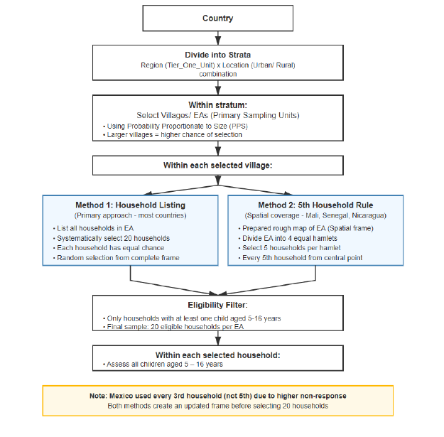

Chapter 6 Getting Started
6.1 Introduction
In this chapter, we want to provide a broad overview of the packages, data, and survey design objects we use in this course. Understanding how a survey was conducted helps us make sense of the results and interpret findings. Thus, we also provide background on the dataset used in examples and exercises. Next, we walk through how to create the survey design objects necessary to begin an analysis. Finally, we provide an overview of the {srvyr} package and the steps needed for analysis.
6.2 Setup
This section gives details on the required packages, data, and the steps for preparing survey design objects. For a worthwhile learning experience, we recommend taking the time to walk through the code provided here and making sure everything is properly set up.
6.2.1 Packages
Many functions in the examples and exercises are from three packages: {tidyverse}, {survey}, and {srvyr}.
After installing these packages, load them using the library() function:
The packages {broom}, {gt}, and {gtsummary} play a role in displaying output and creating formatted tables (Iannone et al. 2025; Robinson, Hayes, and Couch 2023; Sjoberg et al. 2021). Install them with the provided code.
There are a few other packages we use in this course. We want introduce these packages later on.
6.2.2 ICAN-ICAR 2025 Data
The People’s Action for Learning (PAL) Network’s household survey, the International Common Assessment of Numeracy (ICAN) and International Common Assessment of Reading (ICAR) is a citizen-led oral one-on-one assessement conducted in households across 12 countries (6 from Africa, 3 from Asia, and the rest from America). It assesses more than \(89 000\) children across \(59 000\) households on their foundational literacy and numeracy skills. The data is rich in policy-relevant variables, such as reading and mathermatics ability scores, minimum proficiency indicators, enrolment and grade, household composition, and assessment context.
Before beginning an analysis, it is useful to view the data to understand the available variables. The dplyr::glimpse() function produces a list of all variables, their types (e.g., function, double), and a few example values.
# Read the data
icanicar_2025 <- read_csv("data/ican-icar-2025-v1.csv")
# Get a glimpse
icanicar_2025 |>
glimpse()## Rows: 96,452
## Columns: 147
## $ ...1 <dbl> 1, 2, 3, 4, 5, 6, 7, 8, 9, 10, 11, 12, 13, 14, 15, 16, 17, 18, 19, 20, 21, 22, 23, 24, 25, 26, 27, 28, 29, 30, 31, 32, 33, 34, 35, 36, 37, 38, 39, 40, 4…
## $ CountryName <chr> "Mozambique", "Mozambique", "Mozambique", "Mozambique", "Mozambique", "Mozambique", "Mozambique", "Mozambique", "Mozambique", "Mozambique", "Mozambique"…
## $ TierOneUnit <chr> "c101", "c101", "c101", "c101", "c101", "c101", "c101", "c101", "c101", "c101", "c101", "c101", "c101", "c101", "c101", "c101", "c101", "c101", "c101", …
## $ VillageID <chr> "c101", "c101", "c101", "c101", "c101", "c101", "c101", "c101", "c101", "c101", "c101", "c101", "c101", "c101", "c101", "c101", "c101", "c101", "c101", …
## $ Location <chr> "Urban", "Urban", "Urban", "Urban", "Urban", "Urban", "Urban", "Urban", "Urban", "Urban", "Urban", "Urban", "Urban", "Urban", "Urban", "Urban", "Urban",…
## $ HHID <chr> "uuid:f5808f62-6a22-4247-ae68-9eb891657449", "uuid:b98e2157-5941-457c-8249-cea77f3c4b47", "uuid:26117653-2d45-474f-a7ea-6fa591e1bfe7", "uuid:d46bcfd9-f3…
## $ SubmissionDate <date> 2025-09-23, 2025-09-23, 2025-09-23, 2025-09-23, 2025-09-23, 2025-09-23, 2025-09-23, 2025-09-23, 2025-09-23, 2025-09-24, 2025-09-24, 2025-09-24, 2025-09…
## $ duration <dbl> 979, 986, 2167, 2078, 1251, 2199, 2889, 1588, 2203, 4647, 1916, 2110, 1029, 5938, 1240, 755, 1029, 2511, 2868, 1135, 2167, 2167, 2078, 2889, 2203, 4647,…
## $ hh06a <dbl> 4, 7, 6, 6, 5, 5, 5, 4, 4, 5, 7, 9, 5, 13, 5, 6, 6, 7, 8, 8, 6, 6, 6, 5, 4, 5, 9, 13, 13, 13, 13, 13, 7, 7, 8, 8, 8, 8, 9, 5, 8, 7, 7, 4, 7, 4, 9, 5, 9,…
## $ hh06b1 <dbl> 1, 1, 1, 1, 1, 1, 1, 1, 1, 1, 1, 1, 1, 1, 1, 1, 1, 1, 1, 1, 1, 1, 1, 1, 1, 1, 1, 1, 1, 1, 1, 1, 1, 1, 1, 1, 1, 1, 1, 1, 1, 1, 1, 1, 1, 1, 1, 1, 1, 1, 1,…
## $ hh06b2 <dbl> NA, NA, NA, NA, NA, NA, NA, NA, NA, NA, NA, NA, NA, NA, NA, NA, NA, NA, NA, NA, NA, NA, NA, NA, NA, NA, NA, NA, NA, NA, NA, NA, NA, NA, NA, NA, NA, NA, …
## $ hh06c <dbl> 1, 1, 1, 1, 1, 1, 1, 1, 1, 2, 1, 1, 1, 1, 1, 1, 1, 1, 1, 1, 1, 1, 1, 1, 1, 2, 1, 1, 1, 1, 1, 1, 1, 1, 1, 1, 1, 1, 1, 1, 1, 1, 1, 1, 1, 1, 1, 1, 1, 1, 1,…
## $ hh06d <dbl> 1, 1, 1, 1, 1, 1, 1, 0, 1, 1, 1, 1, 1, 1, 1, 1, 1, 1, 1, 1, 1, 1, 1, 1, 1, 1, 1, 1, 1, 1, 1, 1, 1, 1, 1, 1, 1, 1, 1, 0, 1, 1, 1, 1, 1, 1, 1, 1, 1, 1, 1,…
## $ hh07a <dbl> 2, 2, 2, 1, 2, 2, 2, 2, 2, 2, 2, 2, 3, 2, 2, 2, 2, 2, 2, 2, 2, 2, 1, 2, 2, 2, 2, 2, 2, 2, 2, 2, 2, 2, 2, 2, 2, 2, 2, 2, 3, 2, 2, 2, 2, 3, 2, 2, 2, 3, 2,…
## $ hh07b <dbl> 2, 2, 2, 1, 2, 2, 2, 2, 2, 2, 2, 2, 3, 2, 2, 2, 2, 2, 2, 2, 2, 2, 1, 2, 2, 2, 2, 2, 2, 2, 2, 2, 2, 2, 2, 2, 2, 2, 2, 2, 3, 2, 2, 2, 2, 3, 2, 2, 2, 3, 2,…
## $ hh07c <dbl> 1, 1, 1, 1, 1, 1, 1, 1, 1, 1, 1, 1, 1, 1, 1, 1, 1, 1, 1, 1, 1, 1, 1, 1, 1, 1, 1, 1, 1, 1, 1, 1, 1, 1, 1, 1, 1, 1, 1, 1, 1, 1, 1, 1, 1, 1, 1, 1, 1, 1, 1,…
## $ hh07d <dbl> 1, 1, 1, 4, 4, 4, 1, 1, 4, 4, 3, 4, 7, 3, 1, 4, 1, 6, 1, 1, 1, 1, 4, 1, 4, 4, 4, 3, 3, 3, 3, 3, 6, 6, 1, 1, 1, 1, 4, 3, 4, 4, 1, 1, 1, 4, 4, 4, 4, 4, 4,…
## $ hh07e <dbl> 1, 1, 1, 1, 1, 1, 1, 1, 1, 1, 1, 1, 1, 1, 1, 1, 1, 1, 1, 1, 1, 1, 1, 1, 1, 1, 1, 1, 1, 1, 1, 1, 1, 1, 1, 1, 1, 1, 1, 1, 1, 1, 1, 1, 1, 1, 1, 1, 1, 1, 1,…
## $ hh07f <dbl> 1, 1, 1, 1, 1, 1, 1, 1, 1, 1, 1, 1, 1, 1, 1, 1, 1, 1, 1, 1, 1, 1, 1, 1, 1, 1, 1, 1, 1, 1, 1, 1, 1, 1, 1, 1, 1, 1, 1, 1, 1, 1, 1, 1, 1, 1, 1, 1, 1, 1, 1,…
## $ hh07g <dbl> 1, 1, 1, 1, 1, 1, 1, 1, 1, 0, 1, 1, 0, 1, 1, 0, 1, 1, 1, 1, 1, 1, 1, 1, 1, 0, 1, 1, 1, 1, 1, 1, 1, 1, 1, 1, 1, 1, 1, 1, 1, 0, 1, 1, 1, 1, 1, 0, 1, 0, 0,…
## $ hh07h <dbl> 1, 1, 1, 1, 0, 1, 1, 1, 1, 0, 0, 0, 0, 1, 1, 0, 1, 1, 1, 1, 1, 1, 1, 1, 1, 0, 0, 1, 1, 1, 1, 1, 1, 1, 1, 1, 1, 1, 1, 1, 0, 0, 1, 0, 1, 0, 1, 0, 1, 0, 0,…
## $ hh07i <dbl> 1, 1, 1, 1, 0, 1, 1, 0, 0, 0, 0, 0, 0, 0, 1, 1, 1, 1, 1, 0, 1, 1, 1, 1, 0, 0, 0, 0, 0, 0, 0, 0, 1, 1, 1, 1, 1, 0, 1, 1, 0, 0, 1, 0, 1, 1, 1, 0, 1, 0, 0,…
## $ hh07j <dbl> 0, 1, 0, 0, 0, 0, 1, 1, 0, 0, 0, 0, 0, 0, 0, 0, 1, 1, 0, 0, 0, 0, 0, 1, 0, 0, 0, 0, 0, 0, 0, 0, 1, 1, 0, 0, 0, 0, 0, 0, 0, 0, 1, 0, 1, 0, 0, 0, 0, 0, 0,…
## $ hh07k <dbl> 1, 1, 1, 1, 1, 1, 1, 1, 1, 0, 1, 0, 0, 1, 1, 1, 1, 1, 1, 1, 1, 1, 1, 1, 1, 0, 0, 1, 1, 1, 1, 1, 1, 1, 1, 1, 1, 1, 1, 1, 1, 1, 1, 1, 1, 1, 1, 1, 1, 1, 0,…
## $ hh07l <dbl> 0, 1, 1, 1, 0, 0, 1, 0, 0, 1, 1, 0, 0, 0, 1, 0, 0, 1, 0, 0, 1, 1, 1, 1, 0, 1, 0, 0, 0, 0, 0, 0, 1, 1, 0, 0, 0, 0, 1, 1, 0, 1, 1, 0, 1, 0, 0, 0, 0, 0, 0,…
## $ hh07m <dbl> 1, 1, 1, 1, 0, 1, 1, 1, 1, 1, 1, 1, 1, 1, 1, 1, 1, 1, 1, 1, 1, 1, 1, 1, 1, 1, 1, 1, 1, 1, 1, 1, 1, 1, 1, 1, 1, 1, 1, 1, 1, 1, 1, 1, 1, 1, 1, 1, 1, 1, 1,…
## $ hh07n <dbl> 0, 0, 1, 0, NA, 1, 1, 1, 1, 1, 1, 1, 0, 1, 1, 0, 1, 1, 1, 1, 1, 1, 0, 1, 1, 1, 1, 1, 1, 1, 1, 1, 1, 1, 1, 1, 1, 1, 1, 1, 1, 1, 1, 1, 1, 1, 1, 0, 1, 0, 0…
## $ hh07o <dbl> 0, 0, 0, 0, 0, 0, 0, 1, 0, 0, 0, 0, 0, 0, 0, 0, 0, 1, 0, 0, 0, 0, 0, 0, 0, 0, 0, 0, 0, 0, 0, 0, 1, 1, 0, 0, 0, 0, 0, 1, 0, 1, 1, 0, 0, 0, 1, 0, 1, 0, 0,…
## $ hh07p <dbl> 0, 1, 1, 0, 0, 0, 0, 0, 1, 0, 1, 0, 0, 0, 1, 0, 0, 0, 0, 1, 1, 1, 0, 0, 1, 0, 0, 0, 0, 0, 0, 0, 0, 0, 0, 0, 0, 1, 1, 0, 0, 1, 1, 0, 0, 0, 0, 0, 0, 0, 0,…
## $ hh07p_3 <dbl> NA, NA, NA, NA, NA, NA, NA, NA, NA, NA, NA, NA, NA, NA, NA, NA, NA, NA, NA, NA, NA, NA, NA, NA, NA, NA, NA, NA, NA, NA, NA, NA, NA, NA, NA, NA, NA, NA, …
## $ hh07q <dbl> 0, 0, 1, 0, 1, 0, 0, 0, 0, 0, 0, 0, 0, 0, 0, 0, 0, 0, 0, 0, 1, 1, 0, 0, 0, 0, 0, 0, 0, 0, 0, 0, 0, 0, 0, 0, 0, 0, 0, 0, 0, 1, 1, 0, 0, 0, 0, 0, 0, 0, 0,…
## $ ChildID <chr> "uuid:f5808f62-6a22-4247-ae68-9eb891657449_child1", "uuid:b98e2157-5941-457c-8249-cea77f3c4b47_child1", "uuid:26117653-2d45-474f-a7ea-6fa591e1bfe7_child…
## $ ch02 <dbl> 8, 12, 8, 9, 10, 13, 8, 8, 16, 8, 7, 9, 10, 7, 11, 15, 13, 13, 15, 14, 8, 12, 14, 13, 9, 14, 12, 6, 10, 13, 16, 14, 9, 7, 16, 8, 11, 8, 12, 10, 12, 9, 8…
## $ ch03 <dbl> 2, 2, 1, 1, 2, 1, 1, 1, 2, 2, 2, 2, 1, 2, 2, 2, 2, 1, 1, 2, 2, 2, 1, 1, 2, 2, 1, 1, 1, 2, 1, 2, 2, 2, 2, 2, 2, 1, 1, 2, 2, 1, 1, 2, 2, 1, 1, 2, 1, 1, 2,…
## $ ch04a <dbl> 1, 1, 1, 1, 1, 1, 1, 1, 1, 1, 1, 1, 1, 1, 1, 1, 1, 1, 2, 1, 1, 1, 1, 1, 1, 1, 1, 1, 1, 1, 1, 1, 1, 1, 1, 1, 1, 1, 1, 1, 1, 1, 1, 1, 1, 1, 1, 1, 1, 1, 1,…
## $ ch04b <dbl> 1, 1, 1, 1, 1, 1, 1, 1, 1, 1, 1, 1, 1, 1, 1, 1, 2, 1, 1, 1, 1, 1, 1, 1, 1, 1, 2, 1, 1, 1, 2, 3, 1, 1, 1, 1, 1, 1, 1, 1, 1, 1, 1, 1, 1, 1, 1, 1, 1, 1, 1,…
## $ ch04c <dbl> 1, 1, 1, 1, 1, 1, 1, 1, 1, 1, 1, 1, 1, 1, 1, 1, 1, 1, 1, 1, 1, 1, 1, 1, 1, 1, 1, 1, 1, 1, 1, 1, 1, 1, 1, 1, 1, 1, 1, 1, 1, 1, 1, 1, 1, 1, 1, 1, 1, 1, 1,…
## $ ch04d <dbl> 1, 1, 1, 1, 1, 1, 1, 1, 1, 1, 1, 1, 1, 1, 1, 1, 1, 1, 1, 1, 1, 1, 1, 1, 1, 1, 1, 1, 1, 1, 1, 1, 1, 1, 1, 1, 1, 1, 1, 1, 1, 1, 1, 1, 1, 1, 1, 1, 1, 1, 1,…
## $ ch04e <dbl> 1, 1, 1, 1, 1, 1, 1, 1, 1, 1, 1, 1, 1, 1, 1, 1, 1, 1, 1, 1, 1, 1, 1, 1, 1, 1, 1, 1, 1, 1, 1, 1, 1, 1, 1, 1, 1, 1, 1, 1, 1, 1, 1, 1, 1, 1, 1, 1, 1, 1, 1,…
## $ ch04f <dbl> 1, 1, 1, 1, 1, 2, 1, 1, 1, 1, 1, 1, 2, 2, 1, 1, 1, 1, 1, 1, 1, 1, 1, 1, 1, 1, 2, 1, 1, 3, 2, 2, 1, 1, 1, 1, 1, 1, 1, 1, 1, 1, 1, 1, 1, 1, 1, 1, 1, 1, 1,…
## $ ch05 <dbl> 1, 1, 1, 1, 1, 1, 1, 1, 1, 1, 1, 1, 1, 1, 0, 1, 1, 1, 1, 1, 1, 1, 1, 1, 1, 1, 1, 1, 1, 1, 1, 1, 1, 1, 1, 1, 1, 1, 1, 1, 1, 1, 1, 1, 1, 1, 1, 1, 1, 1, 1,…
## $ ch06a <dbl> 4, 6, 3, 5, 2, 7, 3, 3, 10, 1, 2, 2, 4, 2, NA, 8, 6, 8, 10, 8, 3, 8, 5, 7, 4, 8, 5, 2, 4, 8, 11, 10, 4, 3, 11, 3, 6, 4, 7, 5, 7, 5, 3, 1, 9, 1, 8, 7, 8,…
## $ ch06b <dbl> 1, 1, 1, 1, 1, 1, 1, 1, 1, 1, 1, 1, 1, 1, NA, 1, 1, 1, 1, 1, 1, 1, 1, 1, 1, 1, 1, 1, 1, 1, 1, 1, 1, 1, 1, 1, 1, 1, 1, 1, 1, 1, 2, 1, 1, 1, 1, 1, 1, 1, 1…
## $ ch06c <dbl> 1, 1, 1, 1, 1, 1, 1, 1, 1, 1, 1, 1, 1, 1, NA, 1, 1, 1, 1, 1, 1, 1, 1, 1, 1, 1, 1, 1, 1, 1, 1, 1, 1, 1, 1, 1, 1, 1, 1, 1, 1, 1, 1, 1, 1, 1, 1, 1, 1, 1, 1…
## $ ch06d <dbl> 1, 1, 1, 1, 0, 1, 1, 1, 0, 0, 1, 1, 0, 1, NA, 1, 1, 1, 1, 1, 1, 0, 1, 0, 1, 1, 1, 1, 0, 0, 0, 0, 1, 1, 1, 1, 1, 1, 1, 1, 0, 1, 1, 1, 1, 1, 1, 1, 1, 0, 0…
## $ ch06e <dbl> 0, 0, 1, 0, 0, 0, 0, 0, 0, 0, 0, 0, 0, 0, NA, 0, 0, 0, 0, 0, 0, 0, 0, 0, 0, 0, 0, 0, 0, 0, 0, 0, 0, 0, 0, 0, 0, 0, 0, 0, 0, 0, 0, 1, 0, 1, 0, 0, 0, 1, 1…
## $ ch07a <dbl> NA, NA, NA, NA, NA, NA, NA, NA, NA, NA, NA, NA, NA, NA, 0, NA, NA, NA, NA, NA, NA, NA, NA, NA, NA, NA, NA, NA, NA, NA, NA, NA, NA, NA, NA, NA, NA, NA, N…
## $ ch07b <dbl> NA, NA, NA, NA, NA, NA, NA, NA, NA, NA, NA, NA, NA, NA, NA, NA, NA, NA, NA, NA, NA, NA, NA, NA, NA, NA, NA, NA, NA, NA, NA, NA, NA, NA, NA, NA, NA, NA, …
## $ ch07c <dbl> NA, NA, NA, NA, NA, NA, NA, NA, NA, NA, NA, NA, NA, NA, NA, NA, NA, NA, NA, NA, NA, NA, NA, NA, NA, NA, NA, NA, NA, NA, NA, NA, NA, NA, NA, NA, NA, NA, …
## $ ch07d <dbl> NA, NA, NA, NA, NA, NA, NA, NA, NA, NA, NA, NA, NA, NA, NA, NA, NA, NA, NA, NA, NA, NA, NA, NA, NA, NA, NA, NA, NA, NA, NA, NA, NA, NA, NA, NA, NA, NA, …
## $ ch08 <dbl> 0, 0, 0, 0, 0, 0, 0, 1, 0, 0, 0, 0, 0, 0, 1, 0, 1, 0, 0, 0, 0, 0, 1, 0, 0, 0, 0, 0, 0, 0, 0, 0, 0, 0, 0, 0, 1, 1, 0, 0, 0, 1, 0, 0, 0, 0, 1, 0, 1, 0, 0,…
## $ ch09 <dbl> 0, 1, 0, 0, 0, 0, 0, 0, 0, 0, 0, 0, 0, 0, 0, 0, 1, 0, 1, 0, 0, 0, 0, 0, 1, 1, 0, 0, 0, 0, 0, 0, 0, 0, 0, 0, 1, 0, 0, 0, 0, 0, 0, 0, 0, 0, 0, 0, 0, 0, 0,…
## $ ch10a <dbl> 1, 1, 1, 0, 0, 0, 0, 1, 1, 1, 1, 0, 1, 1, NA, 1, 1, 1, 1, 0, 0, 0, 1, 0, 1, 0, 0, 1, 0, 0, 0, 1, 1, 0, 1, 1, 1, 0, 0, 1, 0, 0, 0, 1, 1, 1, 1, 1, 1, 0, 1…
## $ ch10b <dbl> 2, 3, 4, NA, NA, NA, NA, 1, 1, 1, 7, NA, 7, 7, NA, 2, 4, 1, 3, NA, 4, 5, NA, NA, 3, 7, NA, 2, 7, 7, 7, 3, 1, 5, 2, 2, 3, NA, NA, 2, NA, NA, NA, 1, 2, 2,…
## $ ch10c <dbl> 0, 0, 0, 0, 0, 0, 0, 0, 0, 1, 4, 0, 0, 0, 2, 2, 0, 0, 2, 0, 0, 0, 2, 0, 2, 0, 1, 1, 0, 0, 0, 0, 0, 0, 0, 2, 0, 0, 0, 0, 0, 0, 2, 0, 0, 0, 0, 0, 0, 0, 0,…
## $ pt00 <dbl> 1, 1, 3, 3, 3, 0, 3, 3, 3, 2, 0, 0, 1, 0, 3, 1, 0, 2, 0, 1, 1, 0, 0, 0, 3, 2, 0, 1, 1, 1, 0, 1, 2, 2, 1, 1, 1, 1, 0, 3, 3, 3, 3, 3, 3, 3, 2, 1, 2, 1, 1,…
## $ pt01b <dbl> 28, 40, 47, 26, 36, NA, 52, 26, 36, NA, NA, NA, 26, NA, 26, 34, NA, NA, NA, 32, 26, 36, 36, 52, 36, NA, NA, NA, NA, NA, NA, NA, NA, NA, NA, NA, NA, 32, …
## $ pt01c <dbl> 1, 1, 1, 0, 0, NA, 1, 1, 0, NA, NA, NA, 1, NA, 0, 1, NA, NA, NA, 1, 1, 1, 0, 1, 0, NA, NA, NA, NA, NA, NA, NA, NA, NA, NA, NA, NA, 1, NA, 1, 1, 1, 1, 0,…
## $ pt01d <dbl> 1, 1, 1, NA, NA, NA, 1, 1, NA, NA, NA, NA, 1, NA, NA, 1, NA, NA, NA, 2, 2, 1, NA, 1, NA, NA, NA, NA, NA, NA, NA, NA, NA, NA, NA, NA, NA, 2, NA, 3, 2, 1,…
## $ pt01e <dbl> 0, 0, 0, 0, 0, NA, 0, 1, 0, NA, NA, NA, 1, NA, 0, 1, NA, NA, NA, 1, 1, 1, 0, 0, 0, NA, NA, NA, NA, NA, NA, NA, NA, NA, NA, NA, NA, 1, NA, 1, 1, 0, 1, 1,…
## $ pt01f <dbl> NA, NA, NA, NA, NA, NA, NA, 4, NA, NA, NA, NA, 3, NA, NA, 3, NA, NA, NA, 4, NA, NA, NA, NA, NA, NA, NA, NA, NA, NA, NA, NA, NA, NA, NA, NA, NA, 4, NA, 3…
## $ pt02b <dbl> NA, NA, 63, 30, 50, NA, 59, 31, 43, 40, NA, NA, NA, NA, 42, NA, NA, 30, NA, NA, 38, 43, 41, 59, 43, 40, NA, NA, NA, NA, NA, NA, 30, 30, NA, NA, NA, NA, …
## $ pt02c <dbl> NA, NA, 1, 1, 1, NA, 1, 1, 1, 1, NA, NA, NA, NA, 1, NA, NA, 1, NA, NA, 1, 1, 1, 1, 1, 1, NA, NA, NA, NA, NA, NA, 1, 1, NA, NA, NA, NA, NA, 1, 1, 1, 1, 1…
## $ pt02d <dbl> NA, NA, 2, 2, 1, NA, 2, 2, 2, 2, NA, NA, NA, NA, 2, NA, NA, 2, NA, NA, 2, 1, 0, 2, 2, 2, NA, NA, NA, NA, NA, NA, 2, 2, NA, NA, NA, NA, NA, 3, 2, 2, 2, 2…
## $ pt02e <dbl> NA, NA, 1, 1, 1, NA, 1, 1, 1, 1, NA, NA, NA, NA, 1, NA, NA, 1, NA, NA, 1, 1, 1, 1, 1, 1, NA, NA, NA, NA, NA, NA, 1, 1, NA, NA, NA, NA, NA, 1, 0, 0, 1, 1…
## $ pt02f <dbl> NA, NA, 4, 4, 3, NA, 4, 4, 4, 1, NA, NA, NA, NA, 3, NA, NA, 4, NA, NA, 4, 4, 2, 4, 4, 1, NA, NA, NA, NA, NA, NA, 4, 4, NA, NA, NA, NA, NA, 3, NA, NA, 4,…
## $ assessment <dbl> 1, 1, 1, 1, 1, 1, 1, 1, 1, 1, 1, 1, 1, 1, 1, 1, 1, 1, 1, 1, 1, 1, 1, 1, 1, 1, 1, 1, 1, 1, 1, 1, 1, 1, 1, 1, 1, 1, 1, 1, 1, 1, 1, 1, 1, 1, 1, 1, 1, 1, 1,…
## $ sample <dbl> 1, 1, 1, 1, 1, 1, 1, 1, 1, 1, 1, 2, 1, 2, 1, 2, 1, 1, 1, 1, 2, 1, 2, 2, 2, 2, 2, 1, 2, 1, 2, 1, 1, 2, 1, 2, 1, 2, 1, 2, 1, 2, 1, 1, 2, 1, 2, 1, 2, 2, 2,…
## $ l1_1 <dbl> 1, 2, 0, 2, 1, 1, 1, 2, 2, 2, 2, 1, 0, 0, 2, 1, 2, 2, 2, 0, 1, 2, 2, 2, 2, 2, 2, 2, 1, 2, 2, 2, 1, 2, 2, 1, 1, 2, 2, 2, 2, 1, 2, 2, 2, 0, 2, 2, 2, 1, 2,…
## $ l1_2 <dbl> 1, 2, 0, 1, 1, 1, 2, 2, 1, 1, 2, 1, 1, 0, 2, 1, 1, 2, 2, 1, 2, 1, 2, 2, 2, 1, 1, 2, 1, 2, 2, 2, 1, 2, 2, 1, 0, 2, 1, 2, 2, 1, 2, 2, 2, 0, 2, 1, 2, 1, 2,…
## $ l1_3 <dbl> 1, 1, 0, 2, 1, 1, 2, 2, 2, 0, 2, 2, 1, 0, 2, 1, 1, 2, 2, 2, 1, 2, 2, 2, 2, 2, 1, 2, 1, 2, 2, 2, 1, 1, 2, 1, 1, 1, 1, 1, 1, 1, 2, 2, 2, 0, 2, 1, 2, 1, 2,…
## $ l1_4 <dbl> 1, 2, 0, 2, 1, 1, 2, 2, 1, 1, 2, 1, 0, 0, 2, 1, 1, 2, 2, 1, 1, 2, 2, 2, 2, 2, 1, 2, 1, 2, 2, 1, 1, 1, 2, 1, 0, 0, 1, 1, 1, 1, 2, 2, 2, 0, 2, 1, 2, 1, 2,…
## $ l2_1 <dbl> 0, 2, 0, 2, 1, 2, 0, 2, 2, 1, 1, 0, 2, 0, 2, 2, 2, 2, 2, 1, 0, 2, 2, 2, 0, 2, 2, 1, 2, 2, 2, 2, 2, 2, 2, 1, 1, 1, 2, 2, 2, 0, 2, 2, 2, 0, 2, 2, 2, 2, 2,…
## $ l2_2 <dbl> 0, 1, 0, 2, 1, 2, 2, 2, 2, 1, 1, 0, 1, 0, 2, 1, 1, 2, 2, 2, 0, 2, 2, 2, 0, 2, 2, 1, 2, 2, 2, 2, 2, 2, 2, 1, 1, 2, 2, 2, 2, 1, 2, 2, 2, 0, 2, 2, 2, 1, 2,…
## $ l2_3 <dbl> 0, 2, 0, 2, 1, 2, 2, 2, 2, 1, 1, 1, 1, 0, 2, 1, 1, 2, 2, 1, 0, 2, 2, 2, 0, 2, 2, 1, 2, 2, 2, 2, 2, 2, 2, 1, 2, 1, 2, 2, 2, 2, 2, 0, 2, 0, 2, 2, 2, 0, 0,…
## $ l2_4 <dbl> 0, 2, 0, 2, 1, 1, 1, 2, 2, 1, 1, 1, 1, 0, 2, 1, 1, 2, 2, 1, 0, 2, 2, 2, 0, 2, 2, 1, 2, 2, 2, 2, 2, 2, 2, 1, 2, 0, 2, 2, 2, 2, 2, 0, 2, 0, 2, 2, 2, 0, 1,…
## $ l2_5 <dbl> 0, 2, 0, 2, 1, 1, 1, 2, 2, 0, 1, 1, 1, 0, 2, 1, 1, 2, 2, 1, 0, 2, 2, 2, 0, 2, 2, 1, 2, 2, 2, 2, 2, 2, 2, 0, 1, 0, 2, 2, 2, 1, 0, 0, 2, 0, 2, 2, 2, 1, 1,…
## $ l3_1 <dbl> NA, 2, NA, 2, NA, 0, NA, 2, 1, NA, NA, NA, NA, NA, 2, NA, NA, 2, 2, NA, NA, NA, 2, NA, NA, NA, NA, NA, NA, NA, NA, NA, 2, 2, 2, NA, NA, NA, 2, 2, 2, NA,…
## $ l3_2 <dbl> NA, 2, NA, 2, NA, 0, NA, 2, 1, NA, NA, NA, NA, NA, 2, NA, NA, 2, 2, NA, NA, NA, 1, NA, NA, NA, NA, NA, NA, NA, NA, NA, 2, 2, 2, NA, NA, NA, 2, 2, 2, NA,…
## $ l3_3 <dbl> NA, 2, NA, 2, NA, 0, NA, 2, 2, NA, NA, NA, NA, NA, 2, NA, NA, 2, 2, NA, NA, NA, 2, NA, NA, NA, NA, NA, NA, NA, NA, NA, 2, 2, 2, NA, NA, NA, 2, 2, 2, NA,…
## $ l3_4 <dbl> NA, 2, NA, 2, NA, 0, NA, 2, 2, NA, NA, NA, NA, NA, 2, NA, NA, 2, 2, NA, NA, NA, 0, NA, NA, NA, NA, NA, NA, NA, NA, NA, 2, 2, 2, NA, NA, NA, 2, 2, 2, NA,…
## $ l3_5 <dbl> NA, 2, NA, 2, NA, 0, NA, 2, 1, NA, NA, NA, NA, NA, 2, NA, NA, 2, 2, NA, NA, NA, 2, NA, NA, NA, NA, NA, NA, NA, NA, NA, 2, 2, 2, NA, NA, NA, 2, 2, 2, NA,…
## $ l4_1 <dbl> NA, 2, NA, 2, NA, 2, NA, 2, 2, NA, NA, NA, NA, NA, 2, NA, NA, 2, 2, NA, NA, NA, 2, NA, NA, NA, NA, NA, NA, NA, NA, NA, 2, 2, 2, NA, NA, NA, 2, 2, 2, NA,…
## $ l4_2 <dbl> NA, 2, NA, 2, NA, 1, NA, 2, 2, NA, NA, NA, NA, NA, 2, NA, NA, 2, 1, NA, NA, NA, 2, NA, NA, NA, NA, NA, NA, NA, NA, NA, 2, 2, 2, NA, NA, NA, 2, 2, 1, NA,…
## $ l4_3 <dbl> NA, 2, NA, 2, NA, 2, NA, 2, 2, NA, NA, NA, NA, NA, 2, NA, NA, 2, 2, NA, NA, NA, 2, NA, NA, NA, NA, NA, NA, NA, NA, NA, 2, 2, 2, NA, NA, NA, 2, 2, 2, NA,…
## $ l4_4 <dbl> NA, 2, NA, 2, NA, 2, NA, 2, 2, NA, NA, NA, NA, NA, 2, NA, NA, 2, 1, NA, NA, NA, 2, NA, NA, NA, NA, NA, NA, NA, NA, NA, 2, 2, 2, NA, NA, NA, 2, 2, 2, NA,…
## $ l4_5 <dbl> NA, 2, NA, 2, NA, 1, NA, 2, 2, NA, NA, NA, NA, NA, 2, NA, NA, 2, 2, NA, NA, NA, 2, NA, NA, NA, NA, NA, NA, NA, NA, NA, 2, 2, 2, NA, NA, NA, 2, 2, 2, NA,…
## $ l4_6 <dbl> NA, 2, NA, 2, NA, 2, NA, 2, 1, NA, NA, NA, NA, NA, 2, NA, NA, 2, 2, NA, NA, NA, 2, NA, NA, NA, NA, NA, NA, NA, NA, NA, 2, 2, 2, NA, NA, NA, 2, 2, 2, NA,…
## $ l5_1 <dbl> NA, 2, NA, 2, NA, NA, NA, 2, NA, NA, NA, NA, NA, NA, 1, NA, NA, 2, 2, NA, NA, NA, 2, NA, NA, NA, NA, NA, NA, NA, NA, NA, 2, 2, 2, NA, NA, NA, 0, 2, 2, N…
## $ l5_2 <dbl> NA, 2, NA, 2, NA, NA, NA, 2, NA, NA, NA, NA, NA, NA, 1, NA, NA, 2, 2, NA, NA, NA, 2, NA, NA, NA, NA, NA, NA, NA, NA, NA, 1, 2, 2, NA, NA, NA, 0, 2, 2, N…
## $ l5_3 <dbl> NA, 2, NA, 2, NA, NA, NA, 2, NA, NA, NA, NA, NA, NA, 2, NA, NA, 2, 2, NA, NA, NA, 1, NA, NA, NA, NA, NA, NA, NA, NA, NA, 1, 2, 2, NA, NA, NA, 0, 0, 2, N…
## $ l5_4 <dbl> NA, 2, NA, 2, NA, NA, NA, 2, NA, NA, NA, NA, NA, NA, 2, NA, NA, 2, 2, NA, NA, NA, 2, NA, NA, NA, NA, NA, NA, NA, NA, NA, 2, 2, 2, NA, NA, NA, 0, 2, 2, N…
## $ l5_5 <dbl> NA, 2, NA, 2, NA, NA, NA, 2, NA, NA, NA, NA, NA, NA, 0, NA, NA, 2, 2, NA, NA, NA, 2, NA, NA, NA, NA, NA, NA, NA, NA, NA, 0, 1, 2, NA, NA, NA, 0, 2, 2, N…
## $ l6_1 <dbl> NA, 2, NA, 2, NA, NA, NA, 2, NA, NA, NA, NA, NA, NA, 2, NA, NA, 2, 2, NA, NA, NA, 1, NA, NA, NA, NA, NA, NA, NA, NA, NA, 2, 2, 2, NA, NA, NA, NA, 2, 2, …
## $ l6_2 <dbl> NA, 2, NA, 1, NA, NA, NA, 2, NA, NA, NA, NA, NA, NA, 2, NA, NA, 2, 2, NA, NA, NA, 2, NA, NA, NA, NA, NA, NA, NA, NA, NA, 1, 1, 2, NA, NA, NA, NA, 2, 2, …
## $ l6_3 <dbl> NA, 2, NA, 1, NA, NA, NA, 1, NA, NA, NA, NA, NA, NA, 2, NA, NA, 2, 2, NA, NA, NA, 2, NA, NA, NA, NA, NA, NA, NA, NA, NA, 2, 2, 2, NA, NA, NA, NA, 2, 2, …
## $ l6_4 <dbl> NA, 2, NA, 2, NA, NA, NA, 2, NA, NA, NA, NA, NA, NA, 2, NA, NA, 2, 2, NA, NA, NA, 2, NA, NA, NA, NA, NA, NA, NA, NA, NA, 1, 2, 2, NA, NA, NA, NA, 2, 2, …
## $ l6_5 <dbl> NA, 2, NA, 2, NA, NA, NA, 2, NA, NA, NA, NA, NA, NA, 2, NA, NA, 2, 2, NA, NA, NA, 1, NA, NA, NA, NA, NA, NA, NA, NA, NA, 1, 2, 2, NA, NA, NA, NA, 2, 2, …
## $ n1 <dbl> 0, 2, 2, 2, 2, 2, 2, 2, 2, 2, 2, 2, 1, 2, 2, 2, 2, 2, 2, 2, 2, 2, 2, 2, 2, 2, 2, 2, 2, 2, 2, 2, 2, 2, 2, 2, 2, 1, 2, 2, 2, 2, 2, 1, 2, 2, 2, 2, 2, 2, 2,…
## $ n2 <dbl> 2, 2, 2, 2, 2, 2, 2, 2, 2, 2, 2, 2, 1, 2, 2, 2, 2, 2, 2, 1, 2, 2, 1, 2, 2, 2, 2, 2, 2, 2, 2, 2, 2, 2, 2, 1, 2, 0, 2, 2, 2, 2, 2, 1, 2, 0, 2, 2, 2, 2, 2,…
## $ n3 <dbl> 1, 2, 2, 2, 1, 1, 1, 2, 1, 1, 1, 1, 1, 1, 2, 2, 1, 2, 2, 1, 2, 2, 2, 2, 2, 2, 2, 2, 2, 2, 2, 2, 2, 2, 2, 2, 1, 2, 2, 2, 2, 2, 2, 0, 1, 0, 1, 1, 1, 1, 2,…
## $ n4 <dbl> 2, 2, 1, 2, 1, 2, 1, 2, 2, 1, 1, 2, 2, 2, 2, 2, 1, 2, 2, 1, 2, 2, 2, 1, 1, 2, 2, 2, 1, 1, 2, 1, 1, 2, 2, 2, 1, 1, 1, 2, 2, 2, 2, 0, 1, 0, 1, 1, 1, 1, 2,…
## $ n5 <dbl> 2, 2, 2, 2, 2, 2, 2, 2, 1, 2, 2, 2, 0, 1, 2, 2, 1, 2, 2, 2, 2, 2, 2, 2, 2, 2, 2, 1, 2, 2, 1, 2, 1, 2, 2, 1, 0, 0, 1, 1, 2, 1, 2, 0, 1, 0, 0, 2, 0, 2, 2,…
## $ n6 <dbl> 2, 2, 1, 2, 1, 1, 1, 1, 1, 2, 1, 1, 0, 1, 2, 2, 1, 2, 2, 1, 1, 1, 2, 1, 2, 2, 2, 1, 2, 2, 2, 2, 1, 2, 2, 1, 2, 1, 2, 2, 2, 1, 2, 0, 1, 0, 1, 2, 1, 1, 1,…
## $ n7 <dbl> 1, 1, 1, 1, 1, 1, 2, 1, 1, 2, 1, 1, 1, 0, 2, 2, 1, 1, 2, 1, 1, 1, 1, 1, 1, 2, 2, 1, 1, 2, 2, 2, 1, 1, 2, 1, 2, 1, 1, 1, 1, 1, 2, 0, 1, 0, 1, 1, 1, 1, 1,…
## $ n8 <dbl> 1, 1, 1, 1, 1, 1, 2, 1, 1, 1, 2, 1, 1, 1, 2, 2, 1, 1, 2, 1, 1, 1, 1, 1, 1, 2, 2, 1, 1, 2, 2, 2, 1, 1, 2, 1, 1, 1, 1, 1, 1, 1, 2, 0, 2, 0, 1, 1, 1, 1, 1,…
## $ n9 <dbl> 2, 1, 1, 1, 1, 2, 1, 1, 1, 1, 1, 1, 1, 1, 2, 2, 1, 1, 2, 0, 1, 2, 2, 0, 1, 2, 1, 1, 1, 2, 2, 1, 1, 1, 2, 1, 2, 1, 1, 2, 2, 1, 2, 1, 2, 0, 2, 0, 2, 1, 1,…
## $ n10 <dbl> 1, 1, 1, 1, 1, 1, 1, 1, 1, 1, 1, 1, 1, 0, 2, 2, 1, 2, 2, 0, 1, 2, 1, 0, 1, 1, 1, 1, 1, 1, 1, 2, 1, 1, 2, 1, 2, 0, 1, 1, 2, 1, 2, 0, 2, 0, 0, 0, 1, 1, 1,…
## $ n11 <dbl> 2, 2, 2, 2, 2, 2, 2, 2, 2, 2, 2, 2, 2, 2, 2, 2, 2, 2, 2, 2, 2, 2, 2, 2, 2, 2, 2, 2, 2, 2, 2, 2, 2, 2, 2, 2, 1, 2, 2, 2, 2, 2, 2, 2, 2, 2, 2, 2, 2, 2, 2,…
## $ n12 <dbl> 2, 2, 2, 2, 2, 2, 2, 2, 2, 2, 1, 1, 1, 1, 2, 2, 2, 2, 2, 2, 2, 2, 2, 2, 2, 2, 1, 2, 2, 2, 2, 2, 2, 2, 2, 1, 2, 1, 2, 1, 2, 2, 2, 2, 1, 1, 2, 1, 2, 1, 2,…
## $ n13 <dbl> 2, 2, 2, 2, 2, 2, 2, 1, 2, 2, 2, 2, 2, 2, 2, 2, 2, 2, 2, 2, 2, 2, 2, 2, 1, 2, 2, 2, 2, 2, 2, 2, 2, 2, 2, 2, 1, 1, 2, 2, 2, 2, 2, 0, 1, 1, 1, 1, 1, 0, 2,…
## $ n14 <dbl> 2, 2, 1, 2, 1, 1, 2, 2, 2, 2, 2, 2, 2, 2, 2, 1, 2, 1, 2, 1, 1, 2, 2, 2, 2, 2, 2, 2, 2, 2, 2, 1, 2, 2, 2, 2, 1, 1, 2, 2, 2, 2, 2, 0, 1, 0, 1, 0, 1, 1, 1,…
## $ n15 <dbl> 2, 2, 1, 2, 1, 2, 1, 2, 2, 1, 1, 1, 1, 1, 2, 1, 2, 1, 1, 1, 2, 2, 2, 2, 2, 1, 1, 2, 1, 1, 1, 1, 2, 2, 2, 2, 2, 1, 1, 1, 2, 2, 2, 0, 2, 0, 2, 0, 2, 0, 1,…
## $ n16 <dbl> 2, 2, 2, 2, 2, 2, 2, 2, 2, 2, 2, 2, 2, 2, 2, 2, 2, 1, 2, 2, 2, 2, 2, 2, 2, 1, 2, 2, 2, 2, 2, 2, 2, 2, 2, 2, 2, 2, 2, 2, 2, 2, 2, 2, 2, 2, 2, 2, 2, 2, 2,…
## $ n17 <dbl> 2, 2, 2, 2, 2, 2, 2, 2, 2, 2, 2, 2, 2, 2, 2, 1, 2, 2, 2, 2, 2, 2, 2, 2, 2, 2, 2, 2, 2, 2, 2, 2, 2, 2, 2, 2, 2, 2, 2, 2, 2, 2, 2, 2, 2, 2, 2, 2, 2, 2, 2,…
## $ n18 <dbl> 2, 2, 2, 2, 2, 2, 2, 2, 2, 2, 2, 2, 2, 2, 2, 1, 2, 2, 2, 2, 2, 2, 2, 2, 2, 2, 2, 2, 2, 2, 2, 2, 2, 2, 2, 2, 2, 2, 2, 2, 2, 2, 2, 2, 1, 2, 2, 2, 2, 2, 2,…
## $ n19 <dbl> 2, 2, 2, 2, 2, 2, 2, 2, 2, 2, 2, 2, 2, 1, 2, 2, 2, 2, 2, 2, 2, 2, 2, 2, 2, 2, 2, 2, 2, 2, 2, 2, 2, 2, 2, 2, 2, 2, 2, 2, 2, 2, 2, 2, 2, 2, 2, 2, 2, 2, 2,…
## $ n20 <dbl> 2, 2, 2, 2, 2, 2, 2, 2, 2, 2, 2, 2, 2, 2, 2, 2, 2, 2, 2, 2, 2, 2, 2, 2, 2, 2, 2, 2, 2, 2, 2, 2, 2, 2, 2, 2, 2, 2, 2, 2, 2, 2, 2, 0, 2, 2, 2, 2, 2, 2, 2,…
## $ n21 <dbl> 2, 2, 1, 2, 2, 2, 2, 2, 2, 2, 2, 2, 2, 0, 2, 2, 2, 2, 2, 2, 2, 2, 2, 2, 2, 2, 2, 2, 2, 2, 2, 2, 2, 2, 2, 2, 2, 2, 2, 2, 2, 2, 2, 0, 2, 1, 1, 1, 1, 1, 2,…
## $ n22 <dbl> 2, 2, 2, 2, 0, 2, 2, 2, 2, 2, 2, 2, 2, 1, 2, 2, 2, 2, 2, 2, 2, 2, 2, 2, 2, 2, 2, 2, 2, 2, 2, 2, 2, 2, 2, 2, 2, 2, 2, 2, 2, 2, 2, 0, 2, 0, 0, 1, 0, 1, 2,…
## $ n23 <dbl> 2, 2, 2, 2, 0, 2, 2, 2, 2, 0, 1, 2, 2, 1, 2, 1, 2, 2, 2, 2, 2, 2, 2, 2, 2, 2, 2, 0, 2, 2, 2, 2, 2, 2, 2, 2, 2, 2, 2, 2, 2, 2, 2, 1, 2, 0, 0, 0, 0, 1, 2,…
## $ n24 <dbl> 2, 2, 2, 2, 0, 2, 2, 2, 2, 1, 2, 1, 2, 1, 2, 1, 2, 2, 1, 2, 2, 2, 2, 2, 2, 2, 2, 1, 2, 2, 2, 2, 2, 2, 2, 2, 2, 1, 2, 2, 2, 2, 2, 1, 2, 0, 1, 0, 1, 1, 2,…
## $ n25 <dbl> 2, 2, 2, 2, 0, 2, 2, 2, 2, 2, 2, 1, 2, 1, 2, 1, 2, 2, 2, 2, 2, 2, 1, 2, 2, 2, 2, 2, 2, 2, 2, 2, 2, 2, 2, 2, 2, 2, 2, 2, 2, 2, 2, 1, 2, 0, 2, 1, 2, 1, 2,…
## $ n26 <dbl> 1, 2, 1, 2, 0, 1, 2, 2, 2, 2, 1, 1, 2, 2, 2, 1, 2, 2, 2, 2, 1, 2, 1, 2, 1, 2, 2, 1, 2, 2, 2, 0, 2, 2, 2, 2, 1, 2, 2, 2, 2, 2, 2, 0, 2, 0, 2, 1, 2, 1, 2,…
## $ n27 <dbl> 1, 1, 1, 2, 1, 1, 2, 2, 2, 1, 1, 1, 1, 1, 2, 2, 1, 2, 2, 2, 0, 2, 1, 2, 1, 2, 1, 1, 2, 2, 2, 2, 2, 1, 2, 1, 1, 2, 1, 1, 2, 1, 2, 0, 1, 0, 1, 1, 1, 1, 1,…
## $ n28 <dbl> 1, 1, 1, 1, 0, 1, 2, 2, 2, 2, 1, 1, 0, 1, 2, 2, 1, 2, 0, 2, 0, 2, 1, 2, 1, 2, 1, 1, 1, 1, 1, 2, 2, 1, 2, 1, 2, 1, 1, 1, 2, 1, 2, 0, 1, 0, 1, 1, 1, 1, 1,…
## $ n29 <dbl> 1, 1, 1, 1, 1, 1, 1, 2, 1, 2, 2, 1, 2, 1, 2, 2, 1, 2, 1, 1, 1, 2, 1, 2, 1, 1, 1, 1, 1, 1, 1, 1, 1, 1, 2, 1, 1, 1, 1, 1, 2, 1, 2, 0, 1, 0, 0, 1, 0, 1, 1,…
## $ n30 <dbl> 1, 1, 1, 1, 0, 1, 1, 2, 1, 2, 1, 1, 1, 1, 2, 1, 1, 2, 1, 1, 1, 2, 1, 1, 1, 2, 1, 0, 1, 1, 1, 2, 2, 1, 2, 1, 1, 1, 1, 1, 2, 1, 2, 0, 1, 0, 0, 1, 0, 1, 1,…
## $ n31 <dbl> NA, NA, NA, 1, NA, NA, 1, 1, 2, NA, NA, NA, NA, NA, 2, 1, NA, 2, 1, 1, NA, NA, NA, 1, NA, NA, NA, NA, NA, NA, NA, NA, 1, NA, 1, NA, NA, 1, NA, NA, 2, NA…
## $ n32 <dbl> NA, NA, NA, NA, NA, NA, 1, 1, 1, 0, NA, NA, NA, NA, 2, 1, NA, 1, NA, 1, NA, NA, NA, 1, NA, 2, NA, NA, NA, NA, NA, NA, 2, NA, NA, NA, NA, NA, NA, NA, 2, …
## $ n33 <dbl> NA, NA, NA, NA, NA, NA, NA, 2, NA, 0, 1, NA, 1, NA, 2, 1, NA, 1, NA, NA, NA, NA, NA, NA, NA, NA, NA, NA, NA, NA, NA, NA, NA, NA, NA, NA, NA, NA, NA, NA,…
## $ n34 <dbl> NA, NA, NA, NA, NA, NA, NA, 2, NA, 1, NA, NA, NA, NA, 1, NA, NA, 1, NA, NA, NA, NA, NA, NA, NA, 0, NA, NA, NA, NA, NA, NA, 2, NA, NA, NA, NA, NA, NA, NA…
## $ n35 <dbl> NA, NA, NA, NA, NA, NA, 1, 2, 2, 1, NA, NA, NA, NA, 2, 1, NA, 1, NA, 1, NA, NA, NA, 1, NA, 1, NA, NA, NA, NA, NA, NA, 2, NA, NA, NA, NA, NA, NA, NA, 2, …
## $ n36 <dbl> NA, NA, NA, NA, NA, NA, NA, 2, NA, 1, NA, NA, NA, NA, 2, NA, NA, 0, NA, NA, NA, NA, NA, NA, NA, 1, NA, NA, NA, NA, NA, NA, 0, NA, NA, NA, NA, NA, NA, NA…
## $ IcarAssessTime <dbl> NA, 5.5, 1.7, 4.2, NA, 9.7, 4.9, 7.3, 5.1, 6.0, 4.0, 4.0, 6.0, 2.0, 1.7, 1.2, 4.2, 4.4, 6.3, 6.1, 1.5, NA, 4.2, 2.6, 3.0, 4.0, 4.0, 4.0, NA, 2.0, 3.0, 2…
## $ IcanAssessTime <dbl> 4.9, 3.3, 4.3, 4.1, 7.4, 7.2, 11.3, 7.9, 10.1, 18.0, 19.0, NA, 4.0, 6.0, NA, 4.0, 2.5, 6.6, 8.6, 7.2, 3.4, 2.0, 5.0, 12.2, 5.0, 31.0, 6.0, 7.0, 11.0, 9.…
## $ AssessmentLanguage <chr> "Portuguese", "Portuguese", "Portuguese", "Portuguese", "Portuguese", "Portuguese", "Portuguese", "Portuguese", "Portuguese", "Portuguese", "Portuguese"…
## $ AssHomeLang <dbl> 1, 1, 1, 1, 1, 1, 1, 1, 1, 1, 1, 1, 1, 1, 1, 1, 1, 1, 1, 1, 1, 1, 1, 1, 1, 1, 1, 1, 1, 1, 1, 1, 1, 1, 1, 1, 1, 1, 1, 1, 1, 1, 1, 1, 1, 1, 1, 1, 1, 1, 1,…
## $ EnrolmentStatus <chr> "Currently Enrolled", "Currently Enrolled", "Currently Enrolled", "Currently Enrolled", "Currently Enrolled", "Currently Enrolled", "Currently Enrolled"…
## $ HHWeightProvided <dbl> 874, 874, 874, 874, 874, 874, 874, 874, 874, 874, 874, 874, 874, 874, 874, 874, 874, 874, 874, 874, 874, 874, 874, 874, 874, 874, 874, 874, 874, 874, 87…
## $ MPLMath <dbl> 0, 0, 0, 0, 0, 0, 0, 1, 1, 0, 0, 0, 0, 0, 1, 0, 0, 1, 0, 0, 0, 1, 0, 1, 0, 1, 0, 0, 0, 0, 0, 0, 1, 0, 1, 0, 0, 0, 0, 0, 1, 0, 1, 0, 0, 0, 0, 0, 0, 0, 0,…
## $ MPLReading <dbl> 0, 1, 0, 1, 0, 0, 0, 1, 0, 0, 0, 0, 0, 0, 0, 0, 0, 1, 1, 0, 0, 0, 0, 0, 0, 0, 0, 0, 0, 0, 0, 0, 0, 1, 1, 0, 0, 0, 0, 1, 1, 0, 1, 0, 1, 0, 0, 0, 0, 0, 0,…
## $ MPLBoth <dbl> 0, 0, 0, 0, 0, 0, 0, 1, 0, 0, 0, 0, 0, 0, 0, 0, 0, 1, 0, 0, 0, 0, 0, 0, 0, 0, 0, 0, 0, 0, 0, 0, 0, 0, 1, 0, 0, 0, 0, 0, 1, 0, 1, 0, 0, 0, 0, 0, 0, 0, 0,…
## $ MathIRTScore <dbl> -0.4698, -0.3561, -0.6499, -0.2827, -0.9941, -0.5061, -0.3150, 0.2937, -0.1369, -0.4599, -0.6125, -0.7433, -0.5397, -1.1006, 0.8170, -0.5766, -0.4831, -…
## $ StandardErrorMath <dbl> 0.13, 0.14, 0.12, 0.15, 0.15, 0.13, 0.14, 0.17, 0.15, 0.13, 0.12, 0.12, 0.13, 0.17, 0.26, 0.12, 0.13, 0.16, 0.14, 0.13, 0.13, 0.16, 0.13, 0.15, 0.13, 0.…
## $ ReadingIRTScore <dbl> -2.84, 0.88, -2.84, 0.42, -2.84, -0.48, -1.41, 0.62, -0.24, -2.09, -1.64, -2.09, -1.71, -2.84, 0.38, -1.71, -1.41, 1.55, 0.56, -1.41, -2.09, -1.10, 0.25…
## $ StandardErrorReading <dbl> 0.961, 0.313, 0.961, 0.119, 0.961, 0.122, 0.472, 0.183, 0.097, 0.726, 0.564, 0.726, 0.590, 0.961, 0.109, 0.590, 0.472, 0.703, 0.159, 0.472, 0.726, 0.340…There are 96 542 rows and 147 variables in the ICAN-ICAR 2025 data. The output also indicates that most of the variables are doubles (numeric format) and a few characters.
6.2.3 Survey Design Object
The design object is the backbone for survey analysis. It is where we specify the sampling design, weights, and other necessary information to ensure we account for errors in the data. Before creating the design object, we should carefully review the survey documentation to understand how to create the design object for accurate analysis. We use DataFirst’s metadata record on the ICAN-ICAR 2025 survey for this purpose.
In this section, we provide details how to code the design object for the ICAN-ICAR 2025 survey. @fig-pal-sampling-process illustrates the construction of survey design. While we recommend conducting exploratory data analysis on the original data before diving into complex survey analysis, the actual survey analysis and inference should be performed with the survey design objects instead of the original survey data. For example, the ICAN-ICAR 2025 data is called icanicar_2025. If we create a survey design object called icanicar_des, our survey analyses should begin with icanicar_des and not icanicar_2025. Using the survey design object ensures that our calculations appropriately account for the details of the survey design.
The icanicar_des uses a stratified cluster sampling design. Therefore, we need to specify variables for strata and ids (cluster) and fill in the nest argument. In the first stage of the survey, Enumeration Areas (EAs) were selected as the primary sampling unit (PSUs) from the national sampling frames, attained from the country’s government statistics agencies, using the probability proportional to size. The sample is stratified by the first-level administrative division (provinces, districts, etc.). In the second stage, 20 households were selected in each sampled EA. The planned sample size is 222 EAs per country and approximately 4440 households per country. More information is provided in the metadata record for the dataset.

Figure 6.1: Illustration of the ICAN-ICAR multi-stage sampling process.
Survey weight approximates how many population units a sampled unit represents. In its simplest form, the design weight equals the inverse of the selection probability. If a household had a 1 in 500 chance of selection, its basic weight would be 500. In other words, that household represents 500 households in the population of interest. The ICAN-ICAR survey data includes a household weight variable, HH_Weight_Provided, which can be used for population estimate.
To compensate for households that were selected but did not respond (or were missed), the weights are adjusted so that responding households “stand in” for similar households that did not respond. This may also involve post-stratification, that is, adjusting weights so that certain known totals (e.g. population by region, or by urban/rural) align with the population. These adjustments reduce bias from non-response and any sampling frame imperfections.
Ignoring survey weights or clustering can make your analysis misrepresent both the population estimate and its uncertainty. If selection probabilities vary, unweighted summaries describe the sample rather than the population, whereas weighting targets the population by rebalancing each observation’s contribution. Clustering also induces correlation within PSUs, thus treating the data as a random sample typically understates standard errors and produces confidence intervals that are too narrow. Survey-aware methods incorporates the design to estimate uncertainty correctly.
icanicar_des <- icanicar_2025 |>
mutate(
psu = interaction(CountryName, VillageID, drop = TRUE),
stratum = interaction(CountryName, TierOneUnit, drop = TRUE)
) |>
as_survey_design(
ids = c(psu, HHID), # stage 1 = village, stage 2 = household
strata = stratum,
weights = HHWeightProvided,
nest = TRUE
)HHWeightProvided is the final household weight variable provided in the data. It incorporates all necessary adjustments (selection probabilities, non-response, post-stratification). On other hand, nest = TRUE is essential when cluster IDs are only unique within strata. It tells R that VillageID values can repeat across different strata/countries, and prevents R from treating EAs with the same ID in different countries as the same cluster.
The new object displays that we have created “Stratified 2 - level Cluster Sampling design (with replacement)”. It also shows the sampling variables and the list of remaining variables in the dataset. This design object is used throughout this course to conduct survey analysis.
6.3 Survey Analysis Process
There is a general process for analyzing to create estimates with {srvyr} package:
- Create a
tbl_svyobject (a survey object) usingas_survey_design. - Subset data (if needed) using
filter()to create subpopulations. - Specify domains of analysis using
group_by(). - Within
summarise(), specify variables to calculate, including means, totals, proportions, quantiles, and more.
In the next chapter we take first steps in making sense of our survey results.